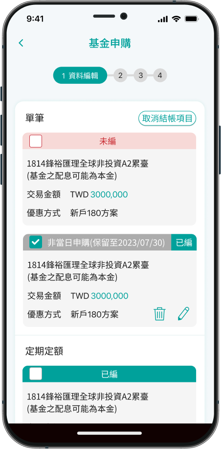

Grace
Product Manager
Strategic Planner
Seamless cross-device integration for a consistent and user-friendly online banking experience.

# Project goals
1- Testing the shopping cart can prevent duplicate orders.
2- Enhance cross-selling and asset integration capabilities.
3- Lower subscription costs and lighten workload.
4- Optimizing Marketing with Data Collection


Traditional fund subscriptions used cumbersome single-order processes, increasing workloads for investors and banks. With e-commerce trends favoring one-stop, batch ordering, banks face pressure from online platforms and fees. To improve efficiency, reduce costs, and meet digital-savvy users’ expectations, management plans to adopt a “shopping cart” model to enhance user experience and competitiveness.

Old fund subscriptions were slowed by long searches and repetitive orders, causing delays and payment failures. These issues increased user frustration and customer service work. A shopping cart model consolidates orders, reduces steps, and simplifies payments, improving efficiency and user experience.

Fund investors can be grouped by lifestyle and investment habits: Mobile Traders seek fast, real-time actions via mobile for short-term gains. Strategic Planners prefer laptops, value in-depth research and long-term planning. Family Investors focus on financial security, managing funds with family at home. Understanding these segments helps tailor interfaces and features to match their needs.
Grace
Product Manager
Strategic Planner
Basic
Age
32 years old
Job
Product Manager
Investment Experience
8 years
Location
Taipei,TAIWAN

A product manager at a tech company who frequently collaborates remotely and writes product specs; researches funds during lunch breaks and weekends for asset allocation.
# Build a diversified fund portfolio to achieve mid-to-long-term financial goals
# Effectively monitor fund performance, risks, and allocation ratios
# Require visual tools to support investment decisions and rebalancing
# Prefer transparent, systemized subscription flows and data presentation
Fund information is scattered, making it hard to compare and analyze efficiently Lacks intuitive allocation simulation tools, requiring manual Excel work Complex multi-order subscription process may cause missed rebalancing opportunities
Amelia
Art Dealer
Mobile Traders
Basic
Age
35 years old
Job
Art Dealer
Investment Experience
12 years
Location
Taipei,TAIWAN
Engaged in art dealing with a mobile work environment, frequently moving between galleries, exhibitions, and clients. Uses commute, waiting times, and lunch breaks to check fund information and make subscription transactions.
# Seize short-term market opportunities, complete fund operations quickly
# Monitor NAV and momentum anytime
# Fast interface and streamlined process
# Set alerts for key fluctuations and deadlines
# Provide popular fund rankings and quick topic tags
＃ Mostly operate on the go, limited by network and device size
＃ Difficult to quickly compare multiple fund info and risks
＃ Too many steps may cause interruptions or delayed subscriptions
Eson
Retired Civil Servant
Family Investors
Basic
Age
52 years old
Job
Retired civil servant
Investment Experience
23 years old
Location
Taipei,TAIWAN
A legal civil servant with a fixed work schedule and regular lifestyle. Uses a computer at home during free time and weekends to monitor fund progress and review asset allocation and goals together with their spouse.
# Steady growth to secure retirement and children’s education funds
# Track long-term returns and financial goal progress
# Fast interface and streamlined process
# Simple, clear processes suitable for family use
# Visualize assets and NAV changes with charts
Comprehensive customer support and transparent information
＃ Sensitive to NAV and unit changes in non–same-day subscriptions
＃ Lack of family co-management or joint account features
＃ Unfamiliar with investment terms, requiring more guidance and explanations
Solution
Solution
Conclusion
More
We conducted research and interviews on the information presented in the fund subscription cart, focusing on the clarity of key information and the readability of content as primary evaluation criteria.
This A/B test compares two fund subscription flows with distinct journey breakpoints.
Flow A: Select fund → Set details → Add to cart
Flow B: Add to cart → Set details at checkout
We measured efficiency, error rate, and user preference.
Test 1
Test 2
# Cautious Behavior Type prefers “edit before purchase 88%
# Some users with allocation needs prefer “purchase before edit 12%
# Non-same-day subscriptions focus on NAV and unit fluctuations
Total number of testers: 12
Add to cart first
Edit before cart
Non-same-day order
